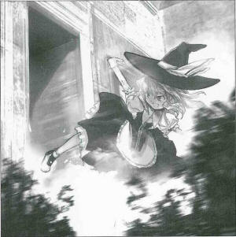

|
Season 118, 4th of the Leaf Month (August)
>In a String of Successive Midsummer Burglaries, the Culprit was Photographed in the Act
That makes the 5th time this month, said an exasperated resident.
On the day of X the Xth at about half past noon, another burglary occurred at the Scarlet Devil Mansion, located by the edge of the lake. Ever since the Red Mist Incident (*1) last month, there has been a surprising number of successive break-ins; not even a month has elapsed since the incident and yet more than ten break-ins have occurred. Our newspaper, as a result of a three-day stakeout, managed to obtain photographs of a burglary in progress. Regrettably, the crime could not be stopped, because the journalist in charge was completely devoted to photography. The criminal appears to be Marisa Kirisame (human), who lives in an unkempt house in the Forest of Magic. When the victims of these crimes, the residents of the mansion, were questioned, they were evasive in their reply. But we already know who the culprit is. It wouldn't be unreasonable to think that there's some relationship between this and the earlier Red Mist Incident. The crime was very simple: after casually sneaking in through the back entrance, the criminal acted as if she owned the place, and walked about inside the mansion. She then left with whatever books she felt like taking. It's hard to believe that the palatial Scarlet Devil Mansion would ever be completely unoccupied. I couldn't help thinking that they must have slackened their security to allow these thefts to happen while surely somebody was present. In that case, since the mansion wasn't empty, it might not be accurate to call it a burglary. However, it seemed to be neither mugging nor swindling, so it seems to be the most appropriate name. For that reason, this article has settled on the term burglary. According to the resident who was robbed, the criminal left the following words. Me, burglar? That's just mean. Just 'cause I snuck in didn't mean I stole anything. My life is way shorter than yours anyway, so can't you just take back everything after I kick the bucket? I'm just borrowing until then. It should be good for the stuff I'm taking that way, too. The contents of the excerpt are very human-like and childish, but it is more surprising that the culprit and the residents regularly converse.
(Aya Shameimaru)
*1 This summer, a red mist temporarily engulfed Gensokyo, blocking
all sunlight.
The details are uncertain, but it is known that last month, the
incident was resolved by a human and the strong sunlight of summer
was restored.
|
|
Marisa What is this third-rate rag? Aya It's the Bunbunmaru Newspaper, reporting the most wonderful information with the fastest speed in Gensokyo. I can't believe there's anyone who hasn't heard of it. Marisa Yep, third-rate. The inside is just awful. What kinda idiot would write stuff like this? Aya Sometimes overly accurate information is criticized. Marisa Yer the idiot who wrote this, aren'tcha? Aya Even if I am criticized, I shall not stop writing. Marisa There’s nothin' more annoying than an active idiot. 'Sides, you said it’s the fastest in Gensokyo, but when did this story here happen? Aya Since it was around the same time as the Red Mist Incident... I guess it's only 20 years ago? Or maybe it was 12? Marisa It was two years ago. Yer internal clock is what's fast here. What’s the point in writin' 'bout ancient history? Aya This newspaper itself was published two years ago. You saw my camera and said, I wanna see an article with my picture in it. That's why I found it for you. Marisa Ah, Guess that does sound like me, all right. Don't really see many workin' cameras in Gensokyo... Hey, waitaminit! You wrote an article about me without askin' permission, and you didn't tell me about it fer two years? Aya My duty is to report the true form of Gensokyo. Marisa Yer sure one sly crow, huh. Wonder where you’ve been hidin'... Aya We tengu have always been watching all of Gensokyo from the sky and we can hear gossip on the wind. No matter where you commit a crime, you can't keep it a secret! Marisa You mean you tengu have super-powered eyes and ears, and nothin' better to do. Can ya smell as well as dogs? Aya No comment. Marisa Come to think of it, there was a rumor that when we have a feast outside fulla good food and drink, your friends will come out of nowhere and join in. So yeah, about as good as dogs? Aya That’s a baseless rumor. You shouldn't spread rumors like that! Marisa Oh, ya don't say? Still, considerin' the article hasn't been criticized for two years, it don't look like ya got too many subscribers. Aya I've got to popularize my newspaper more. Marisa I think your paper's quality matches its popularity. By the way, I heard I could get sake, detergent and amulets by readin' a newspaper in the outside world. How about yours? Aya No, you cannot. Marisa I think at least sake would be good. Aya I said no. The Bunbunmaru Newspaper gives top priority to its contents. Marisa Too bad the articles aren't that good. Still, I'll take this one, since it's a pretty good shot of me. Aya No, this one is for my archives! I can't just give it away! Marisa I'm just borrowin' it 'til I kick the bucket. Aya You really seem like a human who'll live for a long time. Profile: Marisa Kirisame One of the protagonists of the Touhou series, and an ordinary magician. She has an obsession with collecting things. Appearances: Embodiment of Scarlet Devil, Perfect Cherry Blossom, Immaterial and Missing Power, Imperishable Night, Phantasmagoria of Flower View |
| [INDEX] | [NEXT ARTICLE : Sakuya] |